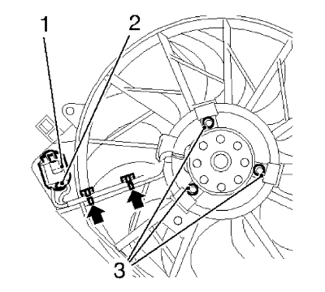

Sustitución del ventilador del refrigerante del motor 1.6L LDE, LXT, LXV y 1.8L 2H0
Procedimiento de desmontaje
- Desconecte el cable negativo de la batería. Consultar Desconexión y conexión del cable negativo de la batería
- Vacíe el sistema de refrigeración. Consultar Drenaje y llenado del sistema de refrigeración

- Desconecte el enchufe del mazo de cables del resistor del ventilador de refrigeración del motor (1).
- Retire el mazo de cables (3).
- Desmonte el tornillo de soporte del retén de la barra que mantiene abierto el capó (1).
- Desmonte el soporte del retén de la barra que mantiene abierto el capó (2).
- Desmonte la abrazadera del tubo flexible de entrada del radiador (4) y el tubo flexible de entrada del radiador (5), en el lado del radiador, y apártelo.
- Desenganche el ventilador de refrigeración del motor (3) de los cuatro puntos de montaje indicados.
Nota: Colóquese derecho contra la dirección de accionamiento.
Nota: Empuje el ventilador de refrigeración del motor a la derecha y levántelo.
- Desmonte el ventilador de refrigeración del motor (3).

- Retire el resistor del ventilador de refrigeración del motor (1) soltando el clip de sujeción (2).
- Desenganche el ventilador de refrigeración del motor del mazo de cables del resistor del ventilador de refrigeración del motor (flechas).
- Desmonte los 3 tornillos del motor del ventilador de refrigeración del motor (3) del ventilador de refrigeración del motor.
- Desmonte el ventilador de refrigeración del motor.
Procedimiento de montaje
- Monte el ventilador del refrigerante del motor.
Precaución:Consulte Precaución con las fijaciones en la sección Prólogo.
- Monte los 3 tornillos del motor del ventilador de refrigeración (3) en el ventilador de refrigeración del motor y apriételos a 4 N·m (36 lib. pulg.).
- Enganche el ventilador de refrigeración del motor en el mazo de cables del resistor del ventilador de refrigeración del motor (flechas).
- Monte el resistor del ventilador de refrigeración del motor (1) fijando el clip de sujeción (2).
- Monte el ventilador del refrigerante del motor (3).
- Enganche el ventilador de refrigeración del motor (3) en los cuatro puntos de montaje indicados.
- Monte la abrazadera del tubo flexible de entrada del radiador (4) y el tubo flexible de entrada del radiador (5) en el lateral del radiador.
- Monte el soporte del retén de la barra que mantiene abierto el capó (2).
- Monte el tornillo de soporte del retén de la barra que mantiene abierto el capó (1) y apriételo a 22 N·m (17 lib. pie).
- Conecte el enchufe del mazo de cables del resistor del ventilador de refrigeración del motor (1).
- Monte el mazo de cables (3).
- Llene el sistema de refrigeración. Consultar Drenaje y llenado del sistema de refrigeración
- Conecte el cable negativo en la batería. Consultar Desconexión y conexión del cable negativo de la batería
| © Copyright Chevrolet. Reservados todos los derechos |